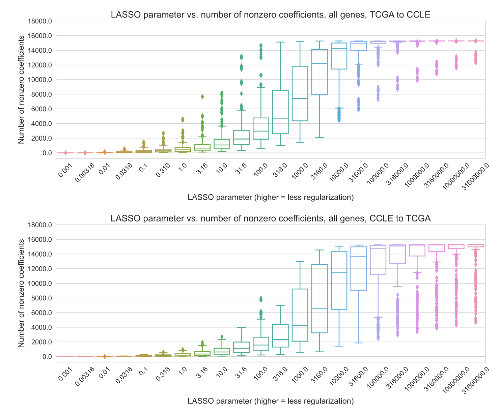

Jake Crawford 0000-0001-6207-0782
· jjc2718
· jjc2718
Genomics and Computational Biology Graduate Group, Perelman School of Medicine, University of Pennsylvania, Philadelphia, PA, USA
Casey S. Greene✉ 0000-0001-8713-9213
· cgreene
· GreeneScientist
Department of Biomedical Informatics, University of Colorado School of Medicine, Aurora, CO, USA; Center for Health AI, University of Colorado School of Medicine, Aurora, CO, USA
✉ — Correspondence possible via GitHub Issues
or email to
Casey S. Greene <casey.s.greene@cuanschutz.edu>.
Abstract
Existing guidelines in statistical modeling for genomics hold that simpler models have advantages over more complex ones.
Potential advantages include cost, interpretability, and improved generalization across datasets or biological contexts.
In cancer transcriptomics, this manifests as a preference for small “gene signatures”, or groups of genes whose expression is used to define cancer subtypes or suggest therapeutic interventions.
To test the assumption that small gene signatures generalize better, we examined the generalization of mutation status prediction models across datasets (from cell lines to human tumors and vice-versa) and contexts (holding out entire cancer types from pan-cancer data).
We compared two simple procedures for model selection, one that exclusively relies on cross-validation performance and one that combines cross-validation performance with regularization strength.
We did not observe that more regularized signatures generalized better.
This result held across multiple problems and both linear models (LASSO logistic regression) and non-linear ones (neural networks).
When the goal of an analysis is to produce generalizable predictive models, we recommend choosing the ones that perform best on held-out data or in cross-validation, instead of those that are smaller or more regularized.
Introduction
Gene expression datasets are typically “wide”, with many gene features and relatively few samples.
These feature-rich datasets present obstacles in many aspects of machine learning, including overfitting and multicollinearity, and challenges in interpretation.
To facilitate the use of feature-rich gene expression data in machine learning models, feature selection and/or dimension reduction are commonly used to distill a more condensed data representation from the input space of all genes [1,2].
The intuition is that many gene expression features are likely irrelevant to the prediction problem, redundant, or contain no meaningful variation across samples, so transforming them or selecting a subset can generate a more reliable predictor.
In cancer transcriptomics, this preference for small, parsimonious sets of genes can be seen in the popularity of “gene signatures”.
These are groups of genes whose expression levels are used to define cancer subtypes or to predict prognosis or therapeutic response [3,4].
Many studies specify the size of the signature in the paper’s title or abstract, suggesting that the fewer genes in a gene signature, the better, e.g. [5,6,7].
Clinically, there are many reasons why a smaller gene signature may be preferable, including cost (fewer genes may be less expensive to profile or validate, whereas a large signature likely requires a targeted array or NGS analysis [8]) and interpretability (it is easier to reason about the function and biological role of a smaller gene set than a large one since even disjoint gene signatures tend to converge on common biological pathways [9,10]).
There is also an underlying assumption that smaller gene signatures tend to be more robust: that for a new patient or in a new biological context, a smaller gene set or more parsimonious model will be more likely to maintain its predictive performance than a larger one.
This assumption has rarely been explicitly tested in genomics applications, but it is often included in guidelines or rules of thumb for statistical modeling or machine learning in biology, e.g. [11,12,13], and it is related in spirit to information-theoretic model selection approaches such as the Akaike information criterion (AIC) and the Bayesian information criterion (BIC) [14,15].
In this study, we sought to test the robustness assumption directly by evaluating model generalization across biological contexts, inspired by previous work on domain adaptation and transfer learning in cancer transcriptomics [16,17,18].
We used two large, heterogeneous public cancer datasets: The Cancer Genome Atlas (TCGA) for human tumor sample data [19], and the Cancer Cell Line Encyclopedia (CCLE) for human cell line data [20].
These datasets contain overlapping -omics data types derived from distinct data sources, allowing us to quantify model generalization across data sources.
In addition, each dataset contains samples from a wide range of different cancer types/tissues of origin, allowing us to quantify model generalization across cancer types.
We trained both linear and non-linear models to predict mutation status (presence or absence) from RNA-seq gene expression for approximately 70 cancer driver genes, across varying levels of model simplicity and degrees of regularization, resulting in a variety of gene signature sizes.
We compared two simple procedures for model selection, one that combines cross-validation performance with model parsimony and one that only relies on cross-validation performance, for each classifier in each context.
Our results suggest that, in general, mutation status classification models that perform well in cross-validation within a biological context also generalize well across biological contexts.
There are some individual genes and some individual cancer types where more regularized well-performing models outperform the best-performing model.
However, we do not observe a systematic generalization advantage for smaller/more regularized models across all genes and cancer types.
These results provide evidence that good cross-validation performance within a biological context (data source or cancer type) is a sufficient proxy for robust performance across contexts.
Methods
Mutation data download and preprocessing
To generate binary mutated/non-mutated gene labels for our machine learning model, we used mutation calls for TCGA samples from MC3 [21] and copy number threshold calls from GISTIC2.0 [22].
MC3 mutation calls were downloaded from the Genomic Data Commons (GDC) of the National Cancer Institute, at https://gdc.cancer.gov/about-data/publications/pancanatlas.
Thresholded copy number calls are from an older version of the GDC data and are available here: https://figshare.com/articles/dataset/TCGA_PanCanAtlas_Copy_Number_Data/6144122.
We removed hypermutated samples, defined as two or more standard deviations above the mean non-silent somatic mutation count, from our dataset to reduce the number of false positives (i.e., non-driver mutations).
Any sample with either a non-silent somatic variant or a copy number variation (copy number gain in the target gene for oncogenes and copy number loss in the target gene for tumor suppressor genes) was included in the positive set; all remaining samples were considered negative for mutation in the target gene.
We followed a similar procedure to generate binary labels for cell lines from CCLE, using the data available on the DepMap download portal at https://depmap.org/portal/download/all/.
Mutation information was retrieved from the OmicsSomaticMutations.csv data file, and copy number information was retrieved from the OmicsCNGene.csv data file.
We thresholded the CNV log-ratios provided by CCLE into binary gain/loss calls using a lower threshold of log2(3/2) (i.e. cell lines with a log-ratio below this threshold were considered to have a full copy loss in the corresponding gene), and an upper threshold of log2(5/2) (i.e. cell lines with a log-ratio above this threshold were considered to have a full copy gain in the corresponding gene).
After applying the same hypermutation criteria that we used for TCGA, no cell lines in CCLE were identified as hypermutated.
After preprocessing, 1402 cell lines with mutation and copy number data remained.
We then combined non-silent point mutations and copy number gain/loss information into binary labels using the same criteria as for TCGA.
Gene expression data download and preprocessing
RNA sequencing data for TCGA was downloaded from GDC at the same link provided above for the Pan-Cancer Atlas.
We discarded non-protein-coding genes and genes that failed to map, and removed tumors that were measured from multiple sites.
After filtering to remove hypermutated samples and taking the intersection of samples with both mutation and gene expression data, 9074 TCGA samples remained.
RNA sequencing data for CCLE was downloaded from the DepMap download portal, linked above, in the CCLE_expression.csv data file.
After taking the intersection of CCLE cell lines with both mutation and gene expression data, 1402 cell lines remained.
For experiments making predictions across datasets (i.e., training models on TCGA and evaluating performance on CCLE, or vice-versa) we took the intersection of genes in both datasets, resulting in 16041 gene features.
For experiments where only TCGA data was used (i.e., evaluating models on held-out cancer types), we used all 16148 gene features present in TCGA after the filtering described above.
Cancer gene set construction
In order to study mutation status classification for a diverse set of cancer driver genes, we started with the set of 125 frequently altered genes from Vogelstein et al. [23] (all genes from Table S2A).
For each target gene, to ensure that the training dataset was reasonably balanced (i.e., that there would be enough mutated samples to train an effective classifier), we included only cancer types with at least 15 mutated samples and at least 5% mutated samples, which we refer to here as “valid” cancer types.
In some cases, this resulted in genes with no valid cancer types, which we dropped from the analysis.
Out of the 125 genes originally listed in the Vogelstein et al. cancer gene set, we retained 71 target genes for the TCGA to CCLE analysis, and 66 genes for the CCLE to TCGA analyses.
For these analyses, each gene needed at least one valid cancer type in TCGA and one valid cancer type in CCLE, to construct the train and test sets.
For the cancer type holdout analysis, we retained 56 target genes: in this case, each gene needed at least two valid cancer types in TCGA to be retained, one to train on and one to hold out.
Classifier setup and cross-validation design
We trained logistic regression classifiers to predict whether or not a given sample had a mutational event in a given target gene using gene expression features as explanatory variables.
Our model was trained on gene expression data (X) to predict somatic mutation presence or absence (y) in a target gene.
To control for varying mutation burden per sample and to adjust for potential cancer type-specific expression patterns, we included one-hot encoded cancer type and log10(sample mutation count) in the model as covariates.
Since gene expression datasets tend to have many dimensions and comparatively few samples, we used a LASSO penalty to perform feature selection [24].
LASSO logistic regression has the ability to generate sparse models (some or most coefficients are 0), as well as having a single tunable hyperparameter which can be easily interpreted as an indicator of regularization strength/model simplicity.
LASSO (\(L_{1}\)-penalized) logistic regression finds the feature weights \(\hat{w} \in \mathbb{R}^{p}\) solving the following optimization problem:
where \(i \in \{1, \dots, n\}\) denotes a sample in the dataset, \(X_i \in \mathbb{R}^{p}\) denotes features (gene expression measurements) from the given sample, \(y_i \in \{0, 1\}\) denotes the label (mutation presence/absence) for the given sample, and \(l(\cdot)\) denotes the negative log-likelihood of the observed data given a particular choice of feature weights, i.e.
Given weight values \(\hat{w}\), it is straightforward to predict the probability of a positive label (mutation in the target gene) \(P(y^{*} = 1 \mid X^{*}; \hat{w})\) for a test sample \(X^{*}\):
and the probability of no mutation in the target gene, \(P(y^{*} = 0 \mid X^{*}; \hat{w})\), is given by (1 - the above quantity).
This optimization problem leaves one hyperparameter to select: \(C\), which controls the inverse of the strength of the L1 penalty on the weight values (i.e. regularization strength scales with \(\frac{1}{C}\)).
Although the LASSO optimization problem does not have a closed form solution, the loss function is convex, and iterative optimization algorithms are commonly used for finding reasonable solutions.
For fixed values of \(C\), we solved for \(\hat{w}\) using scikit-learn’s LogisticRegression method [25], which uses the coordinate descent optimization method implemented in liblinear[26].
We selected this implementation rather than the SGDClassifier stochastic gradient descent implementation because coordinate descent/liblinear tends to generate sparser models and does not depend on a learning rate parameter, although after hyperparameter tuning performance is generally comparable between the implementations [27].
To assess model selection across contexts (datasets and cancer types), we trained models using a variety of LASSO parameters on 75% of the training dataset, holding out 25% of the training dataset as the “cross-validation” set and also evaluating across contexts as the “test” set.
We trained models using \(C\) values evenly spaced on a dense logarithmic scale between (10-3, 103), which was where we generally observed that performance varied the most, and a sparser logarithmic scale between (103, 107) in order to capture models with very little regularization that included all features.
In other words, the exact range we used is the output of the command: numpy.concatenate(numpy.logspace(-3, 3, 43), numpy.logspace(3, 7, 21)).
This range of regularization strength/sparsity levels was intended to give evenly distributed coverage across genes and cancer types that included “underfit” models (predicting only the mean or using very few features, poor performance on all datasets), “overfit” models (performing perfectly on training data but comparatively poorly on cross-validation and test data), and a wide variety of models in between that typically included the best fits to the cross-validation and test data.
To assess variability between train/CV splits, we used all 4 splits (25% holdout sets) x 2 random seeds for a total of 8 different training sets for each gene, using the same test set (i.e. all of the held-out context, either one cancer type or one dataset) in each case.
“Best model” vs. “smallest good model” analysis
For the “best” vs. “smallest good” model selection comparison, we started with 8 performance measurements (4 cross-validation folds x 2 random seeds) for each LASSO parameter.
We took the mean over these 8 measurements to get a single performance measurement for each model (LASSO parameter) on the holdout dataset, which has the same composition as the training set.
We used these per-parameter mean performance measurements to select the “best” model (LASSO parameter with the best mean performance on the holdout dataset), and the “smallest good” model (strongest LASSO parameter with mean performance within 1 standard error of the best mean performance value on the holdout dataset, as implemented in the glmnet R package’s lambda.1se model selection method [28]).
For the distributions of differences shown in the Results, we took the difference in mean performance for the “best” and “smallest good” models for each gene, with positive differences indicating better performance for the “best” model and negative differences better performance for the “smallest good” model, for each gene.
Neural network setup and parameter selection
As a tradeoff between computational cost and ability to represent non-linear decision boundaries, inspired by the architecture of the intermediate-complexity model described in [29], we trained a three-layer fully connected neural network with ReLU nonlinearities [30] to predict mutation status.
For the experiments described in the main paper, we varied the size of the first hidden layer in the range {1, 2, 3, 4, 5, 10, 50, 100, 500, 1000}.
We fixed the size of the second hidden layer to be half of the size of the first hidden layer, rounded up to the nearest integer, and the size of the third hidden layer was the number of classes, 2 in our case.
Our models were trained for 100 epochs of mini-batch stochastic gradient descent in PyTorch [31], using the Adam optimizer [32] and a fixed batch size of 50.
To select the remaining hyperparameters for each hidden layer size, we performed a random search over 10 combinations, with a single train/test split stratified by cancer type, using the following hyperparameter ranges: learning rate {0.1, 0.01, 0.001, 5e-4, 1e-4}, dropout proportion {0.1, 0.5, 0.75}, weight decay (L2 penalty) {0, 0.1, 1, 10, 100}.
We used the same train/cross-validation split strategy described above, generating 8 different performance measurements for each gene and hidden layer size, for the neural network experiments as well.
For the EGFR gene, we also ran experiments where we varied the dropout proportion and the weight decay hyperparameter as the regularization axis, and selected the remaining hyperparameters (including the hidden layer size) using a random search.
In these cases, we used a fixed range for dropout of {0.0, 0.05, 0.125, 0.25, 0.375, 0.5, 0.625, 0.75, 0.875, 0.95}, and a fixed range for weight decay of {0.0, 0.001, 0.005, 0.01, 0.05, 0.1, 0.2, 0.3, 0.4, 0.5, 0.75, 1.0, 10.0}.
All neural network analyses were performed on a Ubuntu 18.04 machine with a NVIDIA RTX 2060 GPU.
Results
Evaluating model generalization using public cancer data
We collected data from the TCGA Pan-Cancer Atlas and the Cancer Cell Line Encyclopedia to predict the presence or absence of mutations in cancer genes, as a benchmark of cancer-related information content across cancer types and contexts.
We trained mutation status classifiers across approximately 70 genes involved in cancer development and progression from Vogelstein et al. 2013 [33], using LASSO logistic regression with gene expression (RNA-seq) values as predictive features.
We fit each classifier across a variety of regularization parameters, resulting in models with a variety of different sparsity levels between the extremes of 0 nonzero features and all features included (Supplementary Figure S1).
Inspired by the generalization experiments across tissues and model systems in [16], we designed experiments to evaluate the generalization of mutation status classifiers across datasets (TCGA to CCLE and CCLE to TCGA) and across biological contexts (cancer types) within TCGA, relative to a within-dataset baseline (Figure 1).
Figure 1: Schematic of experimental design. The colors of the “dots” in the training/model selection/model evaluation panels on the left correspond to train/CV/test curves in the following results figures.
Generalization from human tumor samples to cell lines is more effective than the reverse
To evaluate “cross-dataset” generalization, we trained mutation status classifiers on human tumor data from TCGA and evaluated them on cell line data from CCLE, as well as the reverse from CCLE to TCGA.
As an example, we examined EGFR, an oncogenic tyrosine kinase that is commonly mutated in diverse cancer types and cancer cell lines, including lung cancer, colorectal cancer, and glioblastoma [34,35].
For EGFR mutation status classifiers trained on TCGA and evaluated on CCLE, we saw that AUPR on cell lines was slightly worse than on held-out tumor samples, but comparable across regularization levels/LASSO parameters (Figure 2A).
On the other hand, EGFR classifiers trained on CCLE and evaluated on TCGA performed considerably worse on human tumor samples as compared to held-out cell lines (Figure 2B).
When we compared performance with norms of model coefficient vectors including the \(L_1\) norm that LASSO models explicitly optimize, as opposed to the LASSO parameter values, observed performance trends were similar (Supplementary Figure S2).
To explore these tendencies more generally, we compared performance across all genes in the Vogelstein et al. dataset, for both TCGA to CCLE and CCLE to TCGA generalization.
We measured the difference between performance on the holdout data within the training dataset and performance across datasets, with a positive difference indicating poor generalization (better holdout performance than test performance) and a 0 or negative difference indicating good generalization (comparable test performance to holdout performance).
For generalization from TCGA to CCLE, we observed that median AUPR differences were mostly centered around 0 for most genes, with some exceptions at the extremes (Figure 2C; performance differences on the y-axis).
An example of a gene exhibiting poor generalization was IDH1, the leftmost gene in Figure 2C, with good performance on held-out TCGA data and poor performance on CCLE data.
IDH-mutant glioma cell lines are poorly represented compared to IDH-mutant patient tumors, which may explain the difficulty of generalization to cell lines for IDH1 mutation classifiers [36].
For generalization from CCLE to TCGA, we observed a more pronounced upward shift toward better performance on CCLE and worse on TCGA, with most genes performing better on the CCLE holdout data and very few genes generalizing comparably to the TCGA samples (Figure 2D).
Figure 2:A.EGFR mutation status prediction performance on training samples from TCGA (blue), held-out TCGA samples (orange), and CCLE samples (green), across varying LASSO parameters.
B.EGFR mutation status prediction performance on training samples from CCLE (blue), held-out CCLE samples (orange), and TCGA samples (green).
C. Difference in mutation status prediction performance for models trained on TCGA (holdout data) and evaluated on CCLE (test data), across 71 genes from Vogelstein et al. For each gene, the best model (LASSO parameter) was selected using holdout AUPR performance. Genes on x-axis are ordered by median AUPR difference across cross-validation splits, from highest to lowest.
D. Difference in mutation status prediction performance for models trained on CCLE (holdout data) and evaluated on TCGA (test data), across 66 genes from Vogelstein et al.
“Best” and “smallest good” model selection strategies perform comparably
To address the question of whether sparser or more parsimonious models tend to generalize better or not, we implemented two model selection schemes and compared them for the TCGA to CCLE and CCLE to TCGA mutation prediction problems (Figure 3A).
The “best” model selection scheme chooses the top-performing model (LASSO parameter) on the holdout dataset from the same source as the training data and applies it to the test data from the other data source.
The intention of the “smallest good” model selection scheme is to balance parsimony with reasonable performance on the holdout data, since simply selecting the smallest possible model (generally, the dummy regressor/mean predictor) is not likely to generalize well.
To accomplish this, we rely on a heuristic used by the glmnet R package for generalized linear models [28].
We first identify models with performance within one standard error of the top-performing model on the holdout dataset.
Then, from this subset of relatively well-performing models, we choose the smallest (i.e., strongest LASSO penalty) to apply to the test data.
In both cases, we exclusively use the holdout data to select a model and only apply the model to out-of-dataset samples to evaluate generalization performance after model selection.
For TCGA to CCLE generalization, 37/71 genes (52.1%) had better performance for the “best” model, and 24/71 genes (33.8%) had better generalization performance with the “smallest good” model.
The other 10 genes had the same “best” and “smallest good” model: in other words, the “smallest good” model was also the best-performing overall, so the performance difference between the two was exactly 0 (Figure 3B).
For CCLE to TCGA generalization, 30/66 genes (45.5%) had better performance for the “best” model and 25/66 (37.9%) for the “smallest good,” with the other 11 having the same model fulfill both criteria (Figure 3C).
Overall, these results do not support the hypothesis that the most parsimonious model generalizes the best: for both generalization problems there are slightly more genes where the best-performing model on the holdout dataset is also the best-performing on the test set, although there are some genes where the “smallest good” approach works well.
We examined genes that fell into either category for TCGA to CCLE generalization (dotted lines on Figure 3B).
For NF1, the “best” model outperforms the “smallest good” model (Figure 3D).
Comparing holdout (orange) and cross-dataset (green) performance, both generally follow a similar trend, with the cross-dataset performance near its peak when the holdout performance peaks at a regularization parameter of \(\alpha = 0.01\).
PIK3CA is an example of the opposite, a gene where the “smallest good” model tends to outperform the “best” model (Figure 3E).
In this case, better cross-dataset performance occurs at a higher level of regularization (further left on the x-axis), at \(\alpha = 0.0072\), than the peak for the holdout performance, at \(\alpha = 0.027\).
This suggests that a PIK3CA mutation status classifier that is more parsimonious, but that has slightly worse performance, does tend to generalize more effectively across datasets from TCGA to CCLE.
Figure 3:A. Schematic of “best” vs. “smallest good” model comparison experiments.
B. Distribution of performance comparisons between “best” and “smallest good” model selection strategies, for TCGA -> CCLE generalization. Positive x-axis values indicate better performance for the “best” model, negative values indicate better performance for the “smallest good” model.
C. Distribution of performance comparisons between “best” and “smallest good” model selection strategies, for CCLE -> TCGA generalization.
D.NF1 mutation status prediction performance generalizing from TCGA (holdout, orange), to CCLE (green), with “best” and “smallest good” models labeled.
E.PIK3CA mutation status prediction performance generalizing from TCGA (holdout, orange), to CCLE (green), with “best” and “smallest good” models labeled.
Generalization across cancer types yields similar results to generalization across datasets
To evaluate generalization across biological contexts within a dataset, we trained mutation prediction classifiers on all but one cancer type in TCGA, performed model selection on a holdout set stratified by cancer type, and held out the remaining cancer type as a test set.
We performed the same “best” vs. “smallest good” analysis that was previously described, across 291 gene/holdout cancer type combinations (Figure 4A).
We observed 135/291 gene/cancer type combinations (46.4%) that had better generalization performance with the “best” model, compared to 130/291 (44.7%) for the “smallest good” model.
The other 26 gene/cancer type combinations had the same “best” and “smallest good” model and thus no difference in performance.
This is consistent with our cross-dataset experiments, with slightly more instances where the “best” model on the stratified holdout data also generalizes the best, but no pronounced distributional shift in either direction.
We looked in more detail at two examples of gene/cancer type combinations, one on either side of the 0 point for cross-cancer type generalization.
For prediction of PIK3CA mutation status in rectal adenocarcinoma (READ), we observed the best cross-cancer type performance for relatively low levels of regularization/high x-axis values, at \(\alpha = 0.027\) (Figure 4B).
For prediction of NF1 mutation status in uterine corpus endometrial carcinoma (UCEC), on the other hand, we observed the best cross-cancer generalization for a high level of regularization (\(\alpha = 0.0027\)), and generalization capability for the best parameter on the stratified holdout set (\(\alpha = 0.01\)) was lower (Figure 4C).
It is also interesting to note that in the previous experiments generalizing from TCGA to CCLE, we used PIK3CA as an example of a gene where the “smallest good” model performs best and NF1 as an example where the “best” model was selected, and this tendency was reversed for these two cancer types.
This highlights the importance of considering generalization to the cancer type or sample cohort of interest independently of general trends for a particular classifier, whenever possible.
We aggregated results across genes for each cancer type, looking at performance in the held-out cancer type compared to performance on the stratified holdout set (Figure 4D).
Cancer types that were particularly difficult to generalize to (better performance on stratified data than cancer type holdout, or positive y-axis values) include testicular cancer (TGCT) and soft tissue sarcoma (SARC), which are notable because they are not carcinomas like the majority of cancer types included in TCGA, potentially making generalization harder.
We also aggregated results across cancer types for each gene, identifying a distinct set of genes where classifiers tend to generalize poorly no matter what cancer type is held out (Supplementary Figure S3).
Included in this set of genes with poor generalization performance are HRAS, NRAS, and BRAF, suggesting that a classifier that combines mutations in Ras pathway genes into a single “pathway mutation status” label (as described in [37], or using more general computational approaches such as [38,39]) could be a better approach than separate classifiers for each gene.
In the cancer type aggregation plot (Figure 4D), thyroid carcinoma (THCA) stood out as a carcinoma that had poor performance when held out.
In our experiments, the only genes in which THCA is included as a held-out cancer type are BRAF and NRAS; generalization performance for both genes is below cross-validation performance, but slightly worse for NRAS than BRAF (Supplementary Figure S4).
Previous work suggests that BRAF mutation tends to have a different functional signature in THCA than other cancer types, and withholding THCA from the training set improved classifier performance, which could at least in part explain the difficulty of generalizing to THCA we observe [37].
Figure 4:A. Distribution of performance comparisons between “best” and “smallest good” model selection strategies, for generalization across TCGA cancer types. Each point is a gene/cancer type combination; positive x-axis values indicate better performance for the “best” model and negative values indicate better performance for the “smallest good” model.
B. _PIK3CA mutation status prediction performance generalizing from other cancer types in TCGA (stratified holdout, orange) to rectal adenocarcinoma (READ, green), with “best” and “smallest good” models labeled.
C. _NF1 mutation status prediction performance generalizing from other cancer types in TCGA (stratified holdout, orange) to uterine corpus endometrial carcinoma (UCEC, green), with “best” and “smallest good” models labeled.
D. Distributions of performance difference between CV data (same cancer types as train data) and holdout data (cancer types not represented in train data), by held-out cancer type. Each point is a gene whose mutation status classifier was used to make predictions on out-of-dataset samples in the relevant cancer type.
Small neural network hidden layer sizes tend to generalize poorly
To test whether or not findings generalize to non-linear models, we trained a 3-layer neural network to predict mutation status from gene expression for generalization from TCGA to CCLE, and we varied the size of the first hidden layer to control regularization/model complexity.
We fixed the size of the second hidden layer to be half the size of the first layer, rounded up to the nearest integer; further details in Methods.
For EGFR mutation status prediction, we saw that performance for small hidden layer sizes was noisy, but generally lower than for higher hidden layer sizes (Figure 5A).
On average, over all 71 genes from Vogelstein et al., performance on both held-out TCGA data and CCLE data tends to increase until a hidden layer size of 10-50, then flatten (Figure 5B).
To explore additional approaches to neural network regularization, we also tried varying dropout and weight decay for EGFR and KRAS mutation status classification while holding the hidden layer size constant.
Results followed a similar trend, with generalization performance generally tracking performance on holdout data (Supplementary Figure S5).
In order to measure which hidden layer sizes tended to perform relatively well or poorly, across different mutated cancer genes with different effect sizes, we ranked the range of hidden layer sizes by their generalization performance on CCLE (with low ranks representing good performance, and high ranks representing poor performance; Figure 5C).
For each hidden layer size, we then visualized the distribution of ranks above and below the median rank of 5.5/10; a high proportion of ranks above the median (True, or blue bar) signifies poor overall performance for that hidden layer size, and a high proportion of ranks below the median (False, or orange bar) signifies good performance.
We saw that small hidden layer sizes tended to generalize poorly (<5, but most pronounced for 1 and 2), and intermediate hidden layer sizes tended to generalize well (10-100, and sometimes 500/1000).
This suggests that some degree of parsimony/simplicity could be useful, but very simple models do not tend to generalize well.
We also performed the same “best”/“smallest good” analysis as with the linear models, using hidden layer size as the regularization axis instead of LASSO regularization strength.
We observed a distribution centered around 0, suggesting that the “best” and “smallest good” models tend to generalize similarly (Figure 5D).
28/71 genes (45.2%) had better generalization performance with the “best” model, compared to 21/71 (28.6%) for the “smallest good” model and 22 with the same “best” and “smallest good” model.
Figure 5:A.EGFR mutation status prediction performance on training samples from TCGA (blue), held-out TCGA samples (orange), and CCLE samples (green), across varying neural network hidden layer sizes.
B. Mutation status prediction performance summarized across all genes from Vogelstein et al. on training samples from TCGA (blue), held-out TCGA samples (orange), and CCLE samples (green), across varying neural network hidden layer sizes.
C. Distribution of ranked performance values above/below the median rank for each gene, for each of the hidden layer sizes evaluated. Lower ranks indicate better performance and higher ranks indicate worse performance, relative to other hidden layer sizes.
D. Distribution of performance comparisons between “best” and “smallest good” model selection strategies, for TCGA -> CCLE generalization with neural network hidden layer size as the regularization axis. Positive x-axis values indicate better performance for the “best” model, negative values indicate better performance for the “smallest good” model.
Discussion
Using public cancer genomics and transcriptomics data from TCGA and CCLE, we studied generalization of mutation status classifiers for a wide variety of cancer driver genes.
We designed experiments to evaluate generalization across biological contexts by holding out cancer types in TCGA, and to evaluate generalization across datasets by training models on TCGA and evaluating them on CCLE, and vice-versa.
We found that, in general, smaller or more parsimonious models do not tend to generalize more effectively across cancer types or across datasets, and in the absence of prior knowledge about a prediction problem, simply choosing the model that performs the best on a holdout dataset is at least as effective for selecting models that generalize.
Our results were similar in both linear models (LASSO logistic regression) and non-linear deep neural networks when using hidden layer size as the regularization parameter of interest.
In our non-linear model experiments, we did not observe better generalization across datasets for fully connected neural networks with fewer hidden layer nodes, and our preliminary results indicated a similar trend for dropout and weight decay.
Compared to linear models, it is less clear how to define a “small” or “parsimonious” neural network model since there are many regularization techniques that one may use to control complexity.
Rather than simply removing nodes and keeping the network fully connected, another approach to parsimony could be to select an inductive bias to guide the size reduction of the network.
Existing examples include network structures guided by protein-protein interaction networks or function/pathway ontologies [40,41,42,43].
It is possible that a smaller neural network with a structure that corresponds more appropriately to the prediction problem would achieve better generalization results, although choosing an apt network structure or data source can be a challenging aspect of such efforts.
For generalization from CCLE to TCGA, we observed that performance was generally worse on human tumor samples from TCGA than for held-out cell lines.
This could, at least in part, be a function of sample size: the number of cell lines in CCLE is approximately an order of magnitude smaller than the number of tumor samples in TCGA (~10,000 samples in TCGA vs. ~1,500 cell lines in CCLE, although the exact number of samples used to train and evaluate our classifiers varies by gene, see Methods for further detail).
There are also plausible biological and technical explanations for the difficulty of generalizing to human tumor samples.
This result could reflect the imperfect and limited nature of cancer cell lines as a model system for human tumors, which previous studies have pointed out [44,45,46].
In addition, the CCLE data is collected and processed uniformly, as described in [20], while the TCGA data is processed by a uniform pipeline but collected from a wide variety of different cancer centers around the US [19].
When we ranked cancer types in order of their generalization difficulty aggregated across genes, we noticed a slight tendency toward non-carcinoma cancer types (TGCT, SARC, SKCM) being difficult to generalize to.
It has been pointed out in other biological data types that holding out entire contexts or domains is necessary for a full picture of generalization performance [47,48], which our results corroborate.
This highlights a potential weakness of using TCGA’s carcinoma-dominant pan-cancer data as a training set for a broad range of tasks, for instance in foundation models which are becoming feasible for some genomics applications [49,50,51].
One caveat of our analysis is that each cancer type is included in the training data or held out for a different subset of genes, so it is difficult to detangle gene-specific effects (some mutations have less distinguishable functional effects on gene expression than others) from cancer type-specific effects (some cancer types are less similar to each other than others) on prediction performance using our experimental design.
Conclusion
Without directly evaluating model generalization, it is tempting to assume that simpler models will generalize better than more complex ones, and previous studies and sets of guidelines suggest this rule of thumb [11,12,13,52].
However, we do not observe strong evidence that simpler models inherently generalize more effectively than more complex ones.
There may be other reasons to train small models or to look for the best model of a certain size/sparsity, such as biomarker interpretability or assay cost.
Our results underscore the importance of defining clear goals for each analysis.
If the goal is to achieve generalization across contexts or datasets, whenever possible we recommend directly evaluating generalization.
When it is not feasible, we recommend choosing the model that performs the best on unseen data via cross-validation or a holdout dataset.
Data and code availability
The data from TCGA analyzed during this study were previously published as part of the TCGA Pan-Cancer Atlas project [19], and are available from the NIH NCI Genomic Data Commons (GDC).
The data from CCLE analyzed during this study were previously published [20], and are available from the Broad Institute’s DepMap Portal.
Raw classification results, performance figures for all genes in the Vogelstein et al. 2013 dataset, and parameter selection results and performance comparisons for each individual gene in the “best vs. smallest good” analyses are available on Figshare at https://doi.org/10.6084/m9.figshare.23826450, under a CC0 license.
The scripts used to download and preprocess the datasets for this study are available at https://github.com/greenelab/pancancer-evaluation/tree/master/00_process_data.
Scripts for TCGA <-> CCLE comparisons (Figures 2 and 3) and neural network experiments (Figure 5) are available in the https://github.com/greenelab/pancancer-evaluation/tree/master/08_cell_line_prediction directory.
Scripts for TCGA cancer type comparisons (Figure 4) are available in the https://github.com/greenelab/pancancer-evaluation/tree/master/02_cancer_type_classification directory.
All scripts are available under the open-source BSD 3-clause license.
This manuscript was written using Manubot [53] and is available on GitHub at https://github.com/greenelab/generalization-manuscript under the CC0-1.0 license.
This research was supported in part by the University of Pittsburgh Center for Research Computing through the resources provided. Specifically, this work used the HTC cluster, which is supported by NIH award number S10OD028483.
References
1.
Effective dimension reduction methods for tumor classification
using gene expression data
Few-shot learning creates predictive models of drug response that translate from high-throughput screens to individual patients
Jianzhu Ma, Samson H Fong, Yunan Luo, Christopher J Bakkenist, John Paul Shen, Soufiane Mourragui, Lodewyk FA Wessels, Marc Hafner, Roded Sharan, Jian Peng, Trey Ideker
Next-generation characterization of the Cancer Cell Line Encyclopedia
Mahmoud Ghandi, Franklin W Huang, Judit Jané-Valbuena, Gregory V Kryukov, Christopher C Lo, ERobert McDonald III, Jordi Barretina, Ellen T Gelfand, Craig M Bielski, Haoxin Li, … William R Sellers
Scalable Open Science Approach for Mutation Calling of Tumor Exomes Using Multiple Genomic Pipelines
Kyle Ellrott, Matthew H Bailey, Gordon Saksena, Kyle R Covington, Cyriac Kandoth, Chip Stewart, Julian Hess, Singer Ma, Kami E Chiotti, Michael McLellan, … Armaz Mariamidze
Fabian Pedregosa, Gaël Varoquaux, Alexandre Gramfort, Vincent Michel, Bertrand Thirion, Olivier Grisel, Mathieu Blondel, Peter Prettenhofer, Ron Weiss, Vincent Dubourg, … Édouard Duchesnay
PyTorch: An Imperative Style, High-Performance Deep Learning Library
Adam Paszke, Sam Gross, Francisco Massa, Adam Lerer, James Bradbury, Gregory Chanan, Trevor Killeen, Zeming Lin, Natalia Gimelshein, Luca Antiga, … Soumith Chintala
Patient-derived cells from recurrent tumors that model the evolution of IDH-mutant glioma
Lindsey E Jones, Stephanie Hilz, Matthew R Grimmer, Tali Mazor, Chloé Najac, Joydeep Mukherjee, Andrew McKinney, Tracy Chow, Russell O Pieper, Sabrina M Ronen, … Joseph F Costello
Machine Learning Detects Pan-cancer Ras Pathway Activation in The Cancer Genome Atlas
Gregory P Way, Francisco Sanchez-Vega, Konnor La, Joshua Armenia, Walid K Chatila, Augustin Luna, Chris Sander, Andrew D Cherniack, Marco Mina, Giovanni Ciriello, … Armaz Mariamidze
Identification of phenocopies improves prediction of targeted therapy response over DNA mutations alone
Hamza Bakhtiar, Kyle T Helzer, Yeonhee Park, Yi Chen, Nicholas R Rydzewski, Matthew L Bootsma, Yue Shi, Paul M Harari, Marina Sharifi, Martin Sjöström, … Shuang G Zhao
A Landscape of Pharmacogenomic Interactions in Cancer
Francesco Iorio, Theo A Knijnenburg, Daniel J Vis, Graham R Bignell, Michael P Menden, Michael Schubert, Nanne Aben, Emanuel Gonçalves, Syd Barthorpe, Howard Lightfoot, … Mathew J Garnett
HyenaDNA: Long-Range Genomic Sequence Modeling at Single Nucleotide Resolution
Eric Nguyen, Michael Poli, Marjan Faizi, Armin Thomas, Callum Birch-Sykes, Michael Wornow, Aman Patel, Clayton Rabideau, Stefano Massaroli, Yoshua Bengio, … Chris Ré

Figure S1: Number of nonzero coefficients (model sparsity) across varying regularization parameters, for 71 genes (TCGA to CCLE prediction, top) and 70 genes (CCLE to TCGA prediction, bottom) in the Vogelstein et al. dataset.
Figure S2: Value of norm of coefficient vector vs. performance, for EGFR mutation status prediction from TCGA to CCLE. The x-axis shows the value of each norm for each model, binned into quantiles in order to plot results on the same axis since each norm has a different scale.
Figure S3: Distributions of performance difference between cross-validation data (same cancer types as training data) and holdout data (cancer types not represented in data), grouped by held-out gene. Each point shows performance for a single train/validation split for one cancer type that was held out, using a classifier trained to predict mutations in the given gene.
Figure S4: Top row: Distribution of performance differences when thyroid cancer (THCA) data is held out from training set across seeds/folds, grouped by gene. Bottom row: Distributions of performance differences for genes where THCA is included in training/holdout sets, relative to other cancer types that are included.
Figure S5: Performance vs. dropout parameter (first column) and weight decay strength (second column), for EGFR mutation prediction (first row) and KRAS mutation prediction (second row) using a 3-layer fully connected neural network trained on TCGA (blue/orange) and evaluated on CCLE (green).

![Figure 2: A. EGFR mutation status prediction performance on training samples from TCGA (blue), held-out TCGA samples (orange), and CCLE samples (green), across varying LASSO parameters. B. EGFR mutation status prediction performance on training samples from CCLE (blue), held-out CCLE samples (orange), and TCGA samples (green). C. Difference in mutation status prediction performance for models trained on TCGA (holdout data) and evaluated on CCLE (test data), across 71 genes from Vogelstein et al. For each gene, the best model (LASSO parameter) was selected using holdout AUPR performance. Genes on x-axis are ordered by median AUPR difference across cross-validation splits, from highest to lowest. D. Difference in mutation status prediction performance for models trained on CCLE (holdout data) and evaluated on TCGA (test data), across 66 genes from Vogelstein et al.](images/figure_2.png)
![Figure 3: A. Schematic of “best” vs. “smallest good” model comparison experiments. B. Distribution of performance comparisons between “best” and “smallest good” model selection strategies, for TCGA -> CCLE generalization. Positive x-axis values indicate better performance for the “best” model, negative values indicate better performance for the “smallest good” model. C. Distribution of performance comparisons between “best” and “smallest good” model selection strategies, for CCLE -> TCGA generalization. D. NF1 mutation status prediction performance generalizing from TCGA (holdout, orange), to CCLE (green), with “best” and “smallest good” models labeled. E. PIK3CA mutation status prediction performance generalizing from TCGA (holdout, orange), to CCLE (green), with “best” and “smallest good” models labeled.](images/figure_3.png)
![Figure 4: A. Distribution of performance comparisons between “best” and “smallest good” model selection strategies, for generalization across TCGA cancer types. Each point is a gene/cancer type combination; positive x-axis values indicate better performance for the “best” model and negative values indicate better performance for the “smallest good” model. B. _PIK3CA mutation status prediction performance generalizing from other cancer types in TCGA (stratified holdout, orange) to rectal adenocarcinoma (READ, green), with “best” and “smallest good” models labeled. C. _NF1 mutation status prediction performance generalizing from other cancer types in TCGA (stratified holdout, orange) to uterine corpus endometrial carcinoma (UCEC, green), with “best” and “smallest good” models labeled. D. Distributions of performance difference between CV data (same cancer types as train data) and holdout data (cancer types not represented in train data), by held-out cancer type. Each point is a gene whose mutation status classifier was used to make predictions on out-of-dataset samples in the relevant cancer type.](images/figure_4.png)
![Figure 5: A. EGFR mutation status prediction performance on training samples from TCGA (blue), held-out TCGA samples (orange), and CCLE samples (green), across varying neural network hidden layer sizes. B. Mutation status prediction performance summarized across all genes from Vogelstein et al. on training samples from TCGA (blue), held-out TCGA samples (orange), and CCLE samples (green), across varying neural network hidden layer sizes. C. Distribution of ranked performance values above/below the median rank for each gene, for each of the hidden layer sizes evaluated. Lower ranks indicate better performance and higher ranks indicate worse performance, relative to other hidden layer sizes. D. Distribution of performance comparisons between “best” and “smallest good” model selection strategies, for TCGA -> CCLE generalization with neural network hidden layer size as the regularization axis. Positive x-axis values indicate better performance for the “best” model, negative values indicate better performance for the “smallest good” model.](images/figure_5.png)